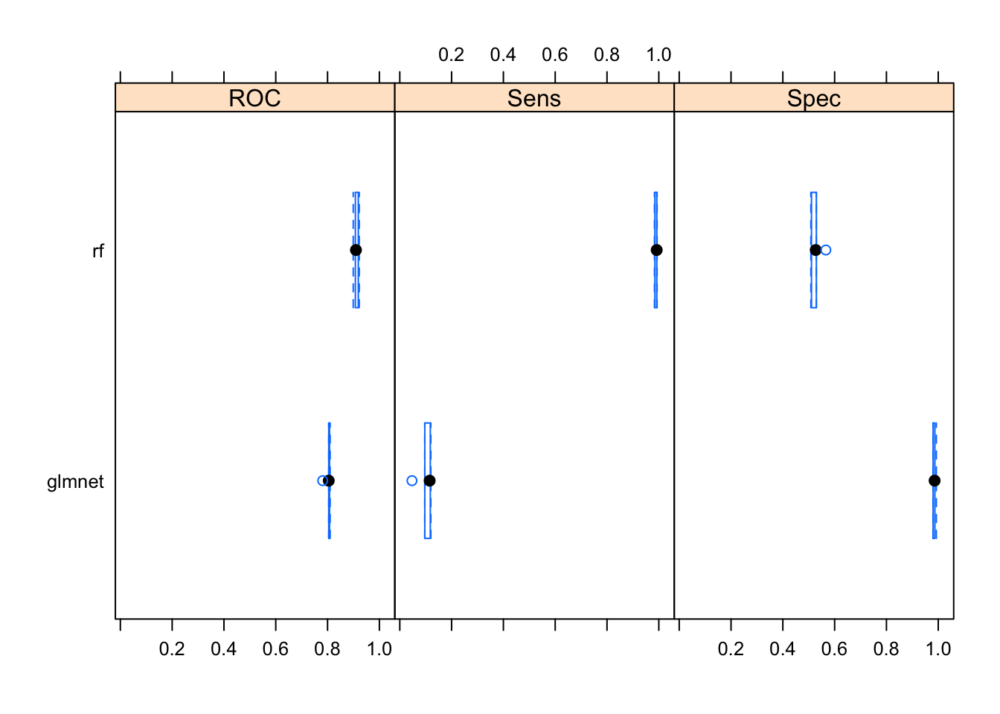
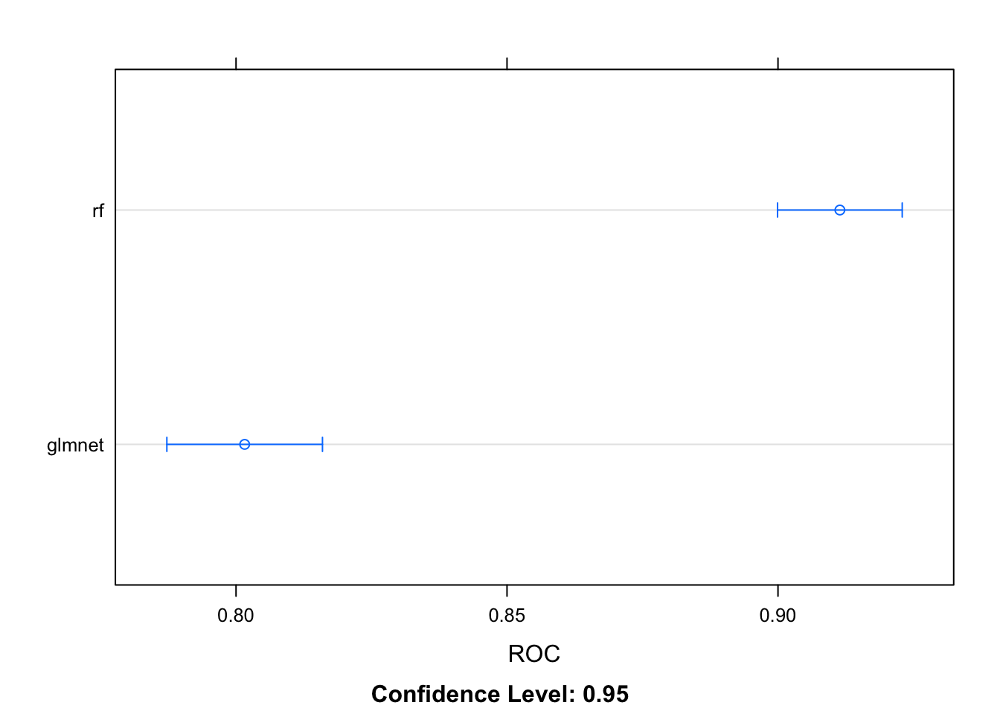
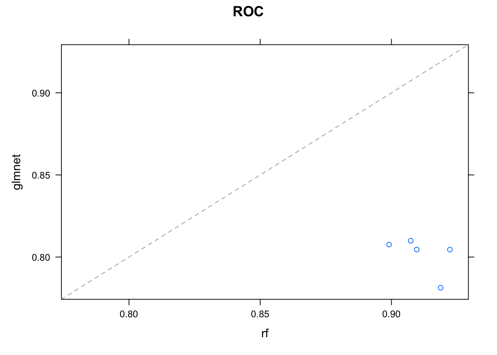
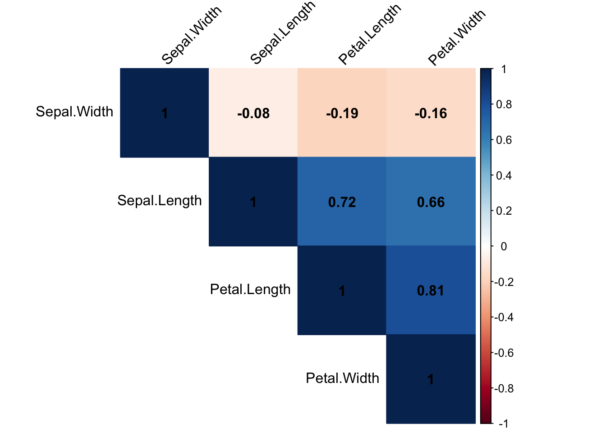

Chapter 8 Correlation Plots
## Sepal.Length Sepal.Width Petal.Length Petal.Width Species
## 1 5.1 3.5 1.4 0.2 setosa
## 2 4.9 3.0 1.4 0.2 setosa
## 3 4.7 3.2 1.3 0.2 setosa
## 4 4.6 3.1 1.5 0.2 setosa
## 5 5.0 3.6 1.4 0.2 setosa
## 6 5.4 3.9 1.7 0.4 setosa## Sepal.Length Sepal.Width Petal.Length Petal.Width
## Sepal.Length 1.0000000 -0.1175698 0.8717538 0.8179411
## Sepal.Width -0.1175698 1.0000000 -0.4284401 -0.3661259
## Petal.Length 0.8717538 -0.4284401 1.0000000 0.9628654
## Petal.Width 0.8179411 -0.3661259 0.9628654 1.0000000


